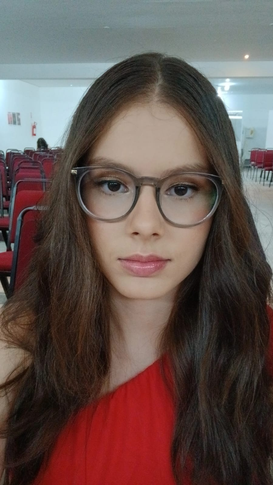
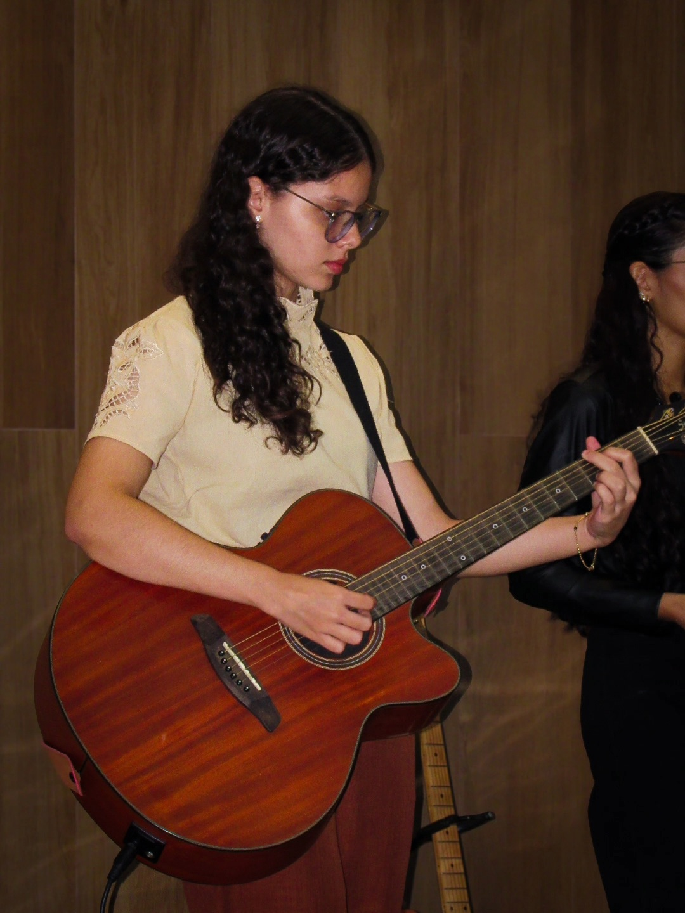
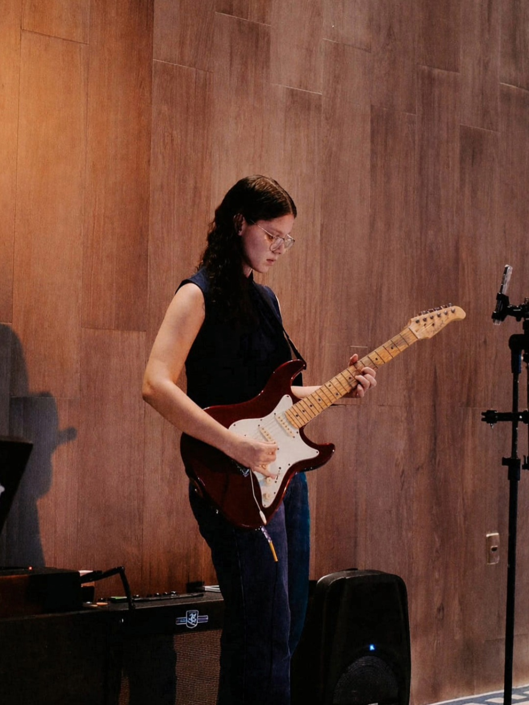
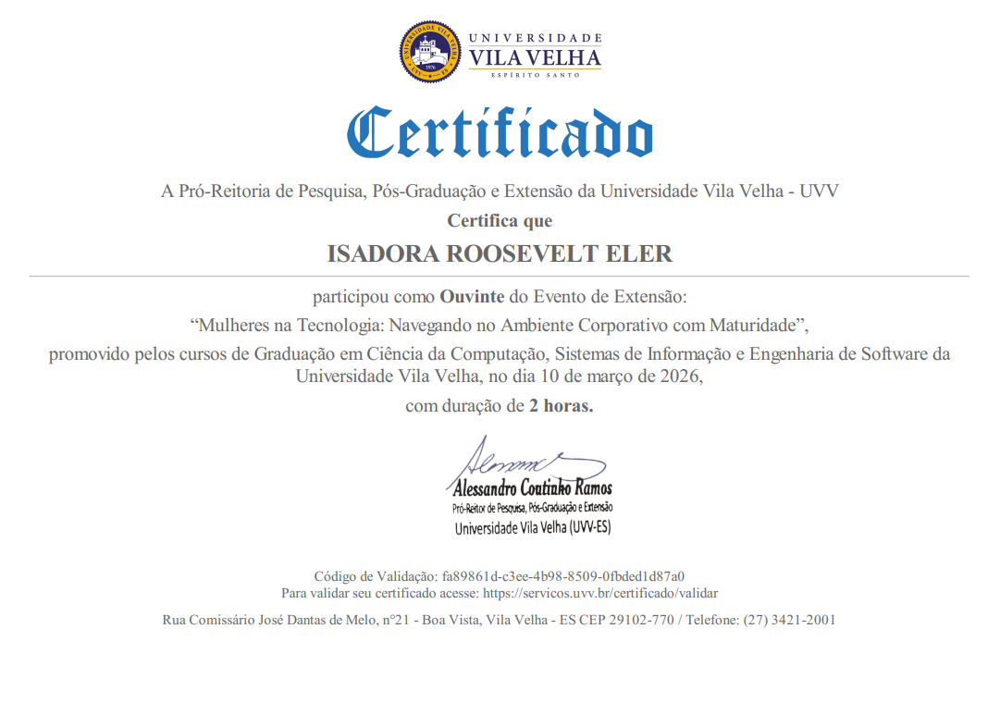
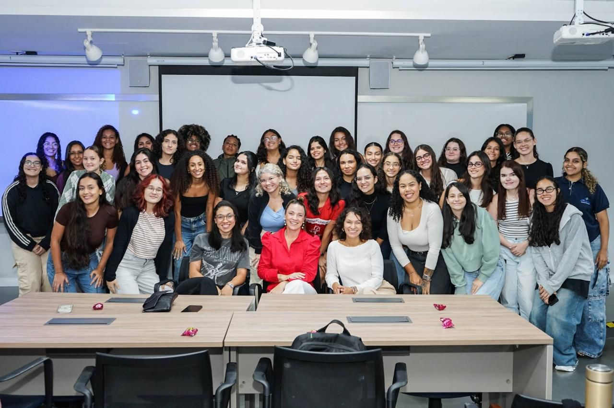
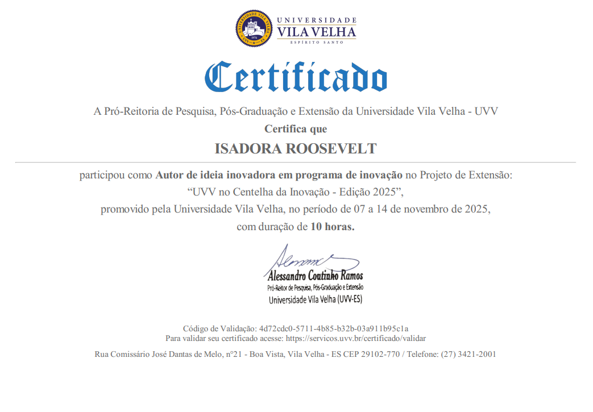

Isadora Roosevelt Eler

Conhecendo um Pouco Sobre Mim:
Olá! Meu nome é Isadora Roosevelt Eler, tenho 19 anos, e sou estudante de Análise e Desenvolvimento de Sistemas na UVV (Atualmente no 3° Período).
Sempre tive interesse em tecnologia e aprendizado contínuo. Busco desenvolver minhas habilidades para crescer profissionalmente na área.
Meus Objetivos Profissionais:
Sempre gostei de mexer na parte visual de projetos e trabalhos da escola, através do Canva (de início). Diante disso, Meu foco principal é dominar a arte de criar sites que unam funcionalidade e beleza.
Tenho muito interesse na área de Design de Interface, utilizando ferramentas como o Figma para planejar cada detalhe visual antes de partir para a prática com HTML e CSS. Meu objetivo é me tornar uma profissional completa, capaz de transformar layouts incríveis em experiências reais na web.
Minhas Habilidades Pessoais:
Habilidades Técnicas:
- Criação de interfaces no Figma/Canva;
- Edição Básica de Imagem/Vídeo;
- Domínio de Raciocínio Lógico;
- Aprendizado contínuo em estruturação de páginas com HTML5 e introdução à estilização com CSS3.
Meus Hobbies:
- Jogos de Raciocínio Lógico (Sudoku e Enigmas);
- Escrita de crônicas no Bloco de Notas;
- Musculação (Academia);
- E minha maior paixão de todas: Tocar Violão e Guitarra:


Veja um vídeo do meu tocando:
Música Favorita
Segue abaixo uma das minhas músicas favoritas:
"Gosto dessa faixa pela sua mensagem de resiliência e renovação. Ela fala sobre a escolha consciente de superar momentos difíceis, enfrentar medos e buscar a própria luz para viver plenamente. É um música que me motiva nos desafios do desenvolvimento de software."
Trajetória Acadêmica:
| Nível | Instituição | Situação |
|---|---|---|
| Fundamental I e II | Colégio Duque de Caxias | Concluído |
| Ensino Médio | Escola Novo Milênio | Concluído |
| Ensino Superior | UVV (Análise e Desenvolvimento de Sistemas) | Cursando (3º Período) |
Planos para o Futuro:
Para o futuro, meu plano é me consolidar como uma desenvolvedora com foco em UX/UI. Quero concluir minha graduação na UVV e buscar certificações nacionais/internacionais em design de interface, unindo a precisão do código com a sensibilidade estética que sempre me acompanhou.
Eventos e Certificações:
- Autor de Ideia Inovadora: Projeto "UVV no Centelha da Inovação" (10h).
- Mulheres na Tecnologia: Navegando no Ambiente Corporativo com Maturidade (2h).
- TI 360: Palestras sobre "IA para Negócios" e "Inteligência de Dados com Databricks" (Sendo Ouvinte).
- Webinar Symplicity: Subindo de Nível nas Redes Sociais (2h).
Registros dos Eventos:


Destaque: Projeto EcoRider

Uma das Autoras da Ideia Inovadora (EcoRider) - Centelha da Inovação 2025
O EcoRider é um aplicativo mobile que eu e meu grupo está desenvolvendo como conceito para oferecer uma plataforma completa de gestão financeira, contábil e ambiental para motociclistas autônomos.
"O projeto combina tecnologia, inteligência artificial e sustentabilidade para facilitar o dia a dia do trabalhador, promovendo uma gestão mais eficiente e consciente."
Disciplinas do 3° Período:
Este semestre está sendo fundamental para alinhar técnica e inovação. Confira o que estou estudando:
- Construção de Software para Web: Foco em desenvolvimento Front-end e estruturação de sites (onde estou criando este projeto!).
- Design e Desenvolvimento de Banco de Dados II: Aprendendo a organizar e gerenciar grandes volumes de dados de forma eficiente.
- Programação Orientada a Objetos I (POO): A base para criar softwares profissionais e organizados.
- Inteligência Artificial e Chatbot: Explorando como a IA pode automatizar processos e melhorar a experiência do usuário.
- Inovação e Design Thinking: Metodologias para criar soluções focadas nas necessidades reais das pessoas (essencial para o EcoRider).
Nessa matéria em específico, está sendo criado um Projeto do InovaWeek (O maior evento universitário de inovação e empreendedorismo do Espírito Santo, realizado anualmente pela UVV) chamado LifeXP.
O projeto propõe a criação de um sistema gamificado que transforma atividades do cotidiano em desafios e recompensas, incentivando a disciplina e a produtividade.
Status do Life XP: Imersão
- Engenharia de Software II: Planejamento e processos para garantir a qualidade de sistemas complexos.
- Empreendedorismo e Negócios: Visão de mercado para transformar ideias tecnológicas em oportunidades reais.
O que Desejo Trabalhar no Futuro?
Com uma base sólida em Lógica de Programação e um olhar atento ao design, meu plano é me especializar como Desenvolvedora Front-End com foco em UX/UI.
Meus próximos passos incluem:
| Foco | Plano de Ação |
|---|---|
| Consolidação Técnica | Aprofundar conhecimentos em POO e Banco de Dados na UVV para sistemas robustos. |
| Do Protótipo ao Código | Evoluir o EcoRider e LifeXP da ideação para aplicações funcionais. |
| Comunicação | Usar habilidades de escrita e crônicas para criar interfaces humanas e acessíveis. |
| Aprendizado Contínuo | Evolução diária em HTML5, CSS3 e JavaScript. |
Meu objetivo final é ser uma profissional que não apenas "digita código", mas que projeta soluções que facilitem a vida das pessoas, unindo a precisão da tecnologia com a sensibilidade do design.